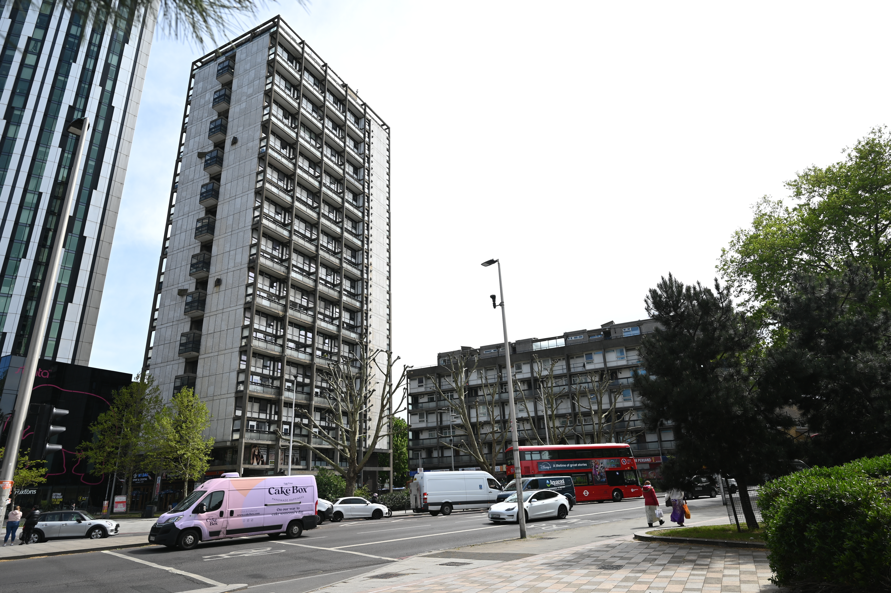

Stop 8 of 16
Draper Estate

❮
❯
Tap to Listen
Your browser does not support the audio player.
This is where you tell the story for Stop 8.
Next: Stop 9 →
← Previous
Open in Google Maps
← Back to Main Menu